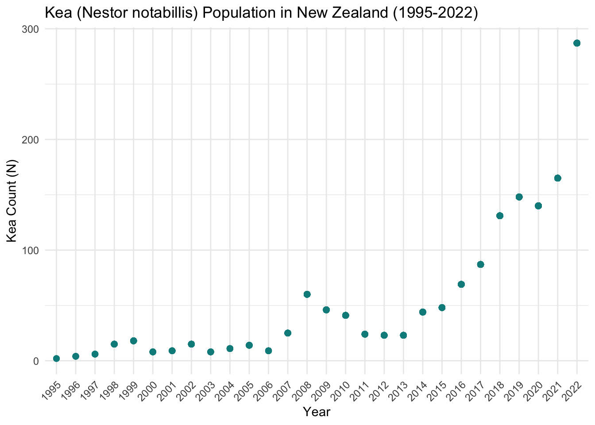

Plotting time series of population data - A great way to visualize data - Identify initial trends - Don’t need an R package to do so
Data Source: GBIF.org (20 January 2024) GBIF Occurrence Download https://doi.org/10.15468/dl.3tknym - Data was cleaned to represent “research grade” data
Load Packages
library(tidyverse)
── Attaching core tidyverse packages ──────────────────────── tidyverse 2.0.0 ──
✔ dplyr 1.1.3 ✔ readr 2.1.4
✔ forcats 1.0.0 ✔ stringr 1.5.0
✔ ggplot2 3.4.4 ✔ tibble 3.2.1
✔ lubridate 1.9.2 ✔ tidyr 1.3.0
✔ purrr 1.0.1
── Conflicts ────────────────────────────────────────── tidyverse_conflicts() ──
✖ dplyr::filter() masks stats::filter()
✖ dplyr::lag() masks stats::lag()
ℹ Use the conflicted package (<http://conflicted.r-lib.org/>) to force all conflicts to become errors
library(here)
here() starts at /Users/oliviasomhegyi/Desktop/Grad School/2nd_Year/Winter_Quarter/ESM_211/esm_211_lab
library(janitor)
Attaching package: 'janitor'
The following objects are masked from 'package:stats':
chisq.test, fisher.test
library(dplyr)
Import and tidy data
# import data; Kea data from GBIFkea_raw <-read_csv(here('data', 'kea_gbif.csv'))
Warning: One or more parsing issues, call `problems()` on your data frame for details,
e.g.:
dat <- vroom(...)
problems(dat)
Rows: 9538 Columns: 56
── Column specification ────────────────────────────────────────────────────────
Delimiter: ","
chr (54): datasetKey, occurrenceID, kingdom, phylum, class, order, family, g...
dbl (1): gbifID
lgl (1): ...56
ℹ Use `spec()` to retrieve the full column specification for this data.
ℹ Specify the column types or set `show_col_types = FALSE` to quiet this message.
# clean datakea <- kea_raw %>%clean_names() %>%#names to lower_case_snakeselect('scientific_name', 'verbatim_scientific_name', 'year', 'basis_of_record') %>%# select these 4 columnsfilter(basis_of_record =="HUMAN_OBSERVATION") %>%# filter for only human observation datagroup_by(year) %>%# group data by 'year'mutate(count =n()) # add new column called 'count'; counts the number of observations in each year
plot data
kea_plot<-ggplot(kea, aes(x=year, y=count)) +# x = year, y = countgeom_point(color='cyan4',size=2) +xlab("Year") +ylab("Kea Count (N)") +ggtitle("Kea (Nestor notabillis) Population in New Zealand (1995-2022)") +theme_minimal() +theme(axis.text.x =element_text(angle=45, hjust=1)) # adjust x axis labelskea_plot

Kea populations are increasing from 1995! Data collection may have also been limited in the earlier years on the graph as well - should really look into the data furhter.